![GTK Cyber Euclidean Distance calculations def dist(x,y): return np.sqrt(np.sum((x-y)**2)) > mat = np.array([[ 6,6,3 ], [1,2,1], [8,1,9]]) > dist(mat[0], mat[1]) 6.7082039324993694](pages/p017.webp)


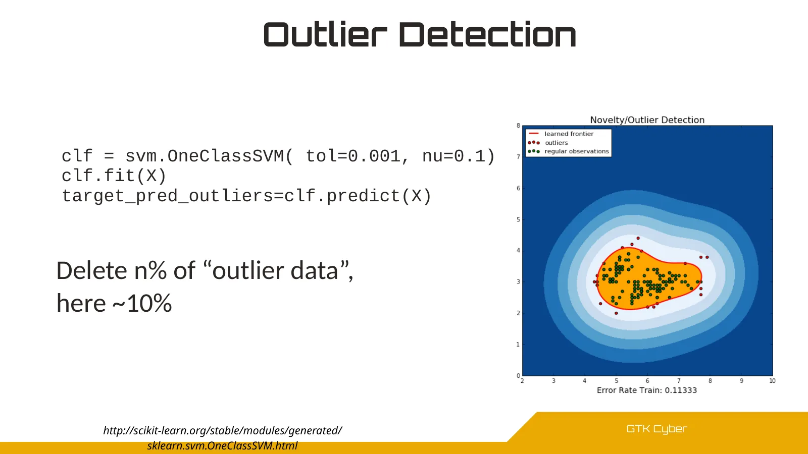
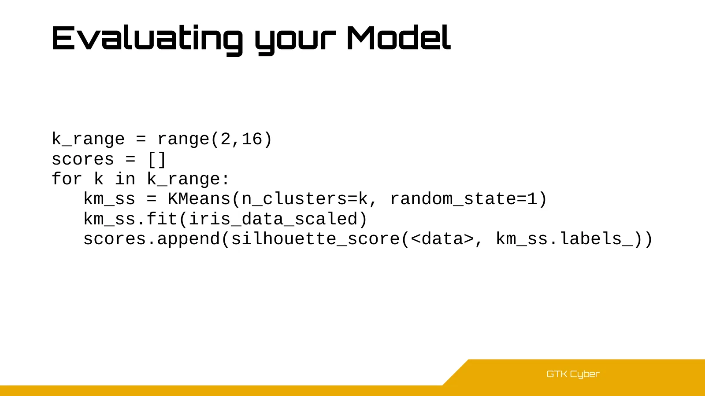
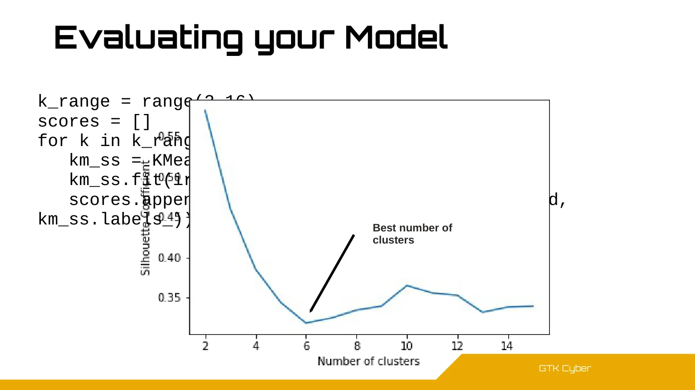
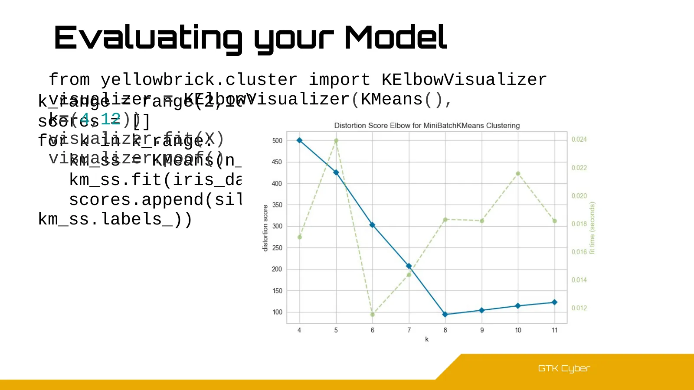
![GTK Cyber Evaluating your Model k_range = range(2,16) scores = [] for k in k_range: km_ss = KMeans(n_clusters=k, random_state=1) km_ss.fit(iris_data_scaled) scores.append(silhouett](pages/p061.webp)
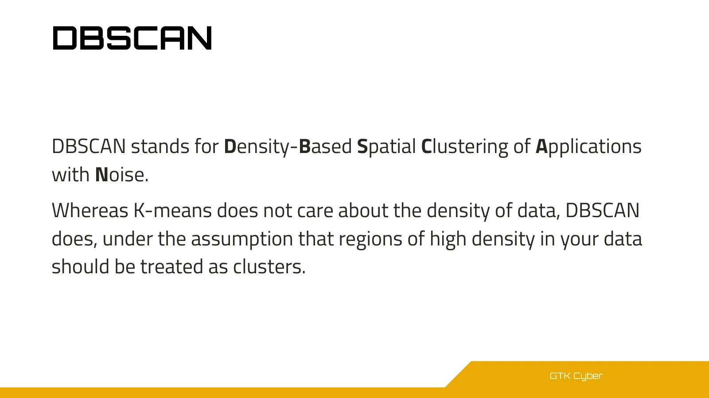

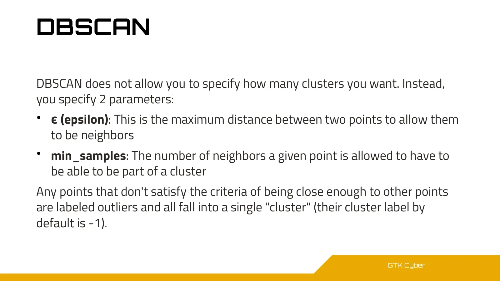
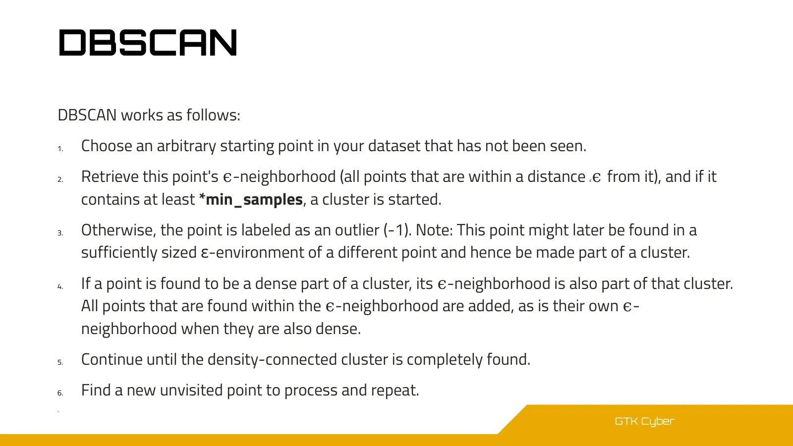
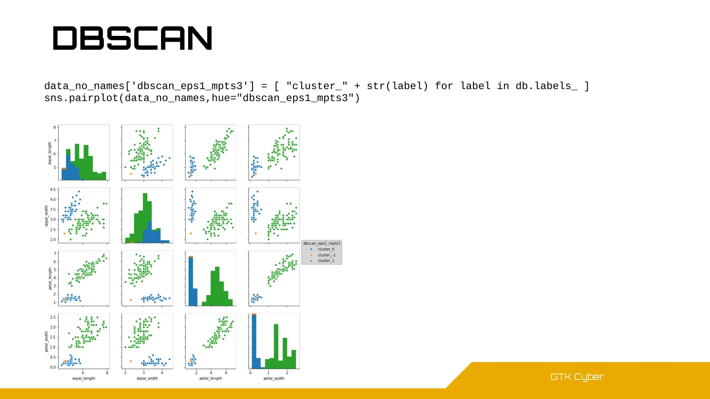
![GTK Cyber DBSCAN data_no_names['dbscan_eps1_mpts3'] = [ "cluster_" + str(label) for label in db.labels_ ] sns.pairplot(data_no_names,hue="dbscan_eps1_mpts3")](pages/p067.webp)

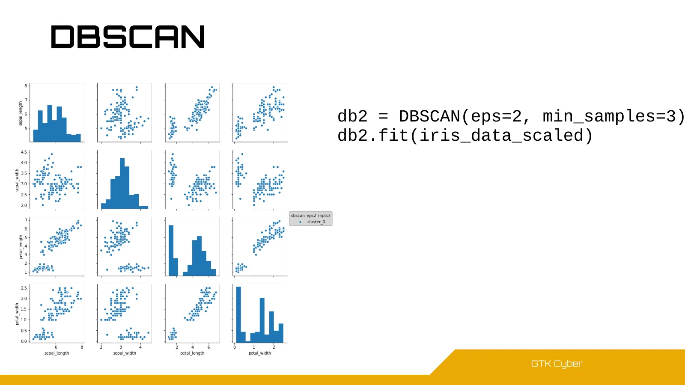

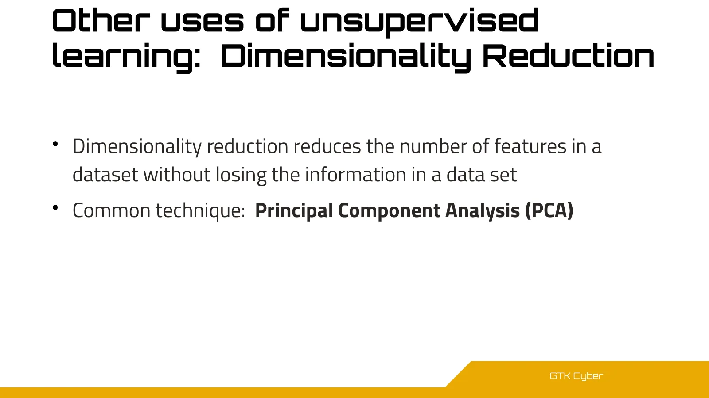

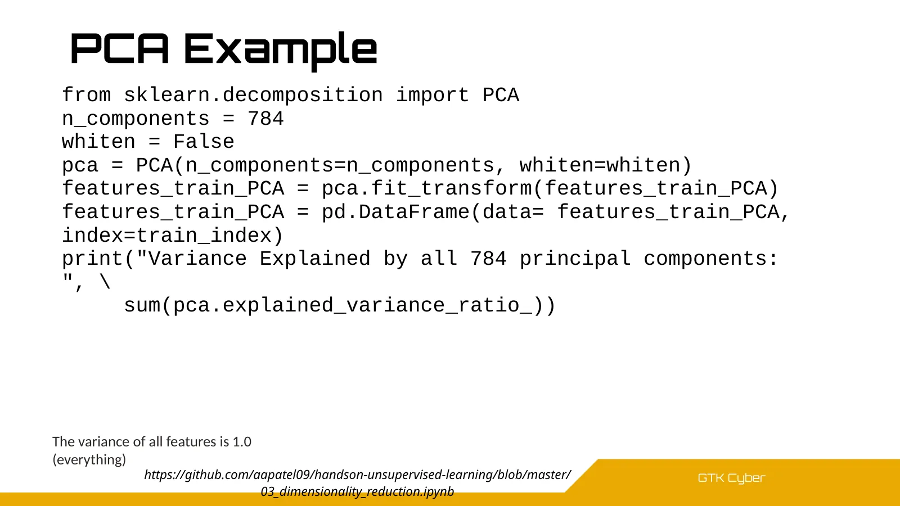











